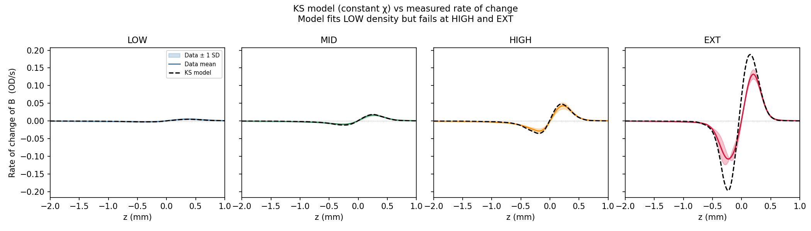
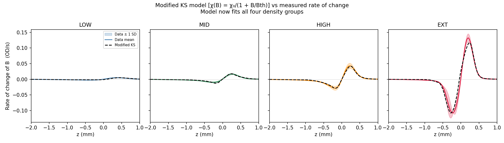
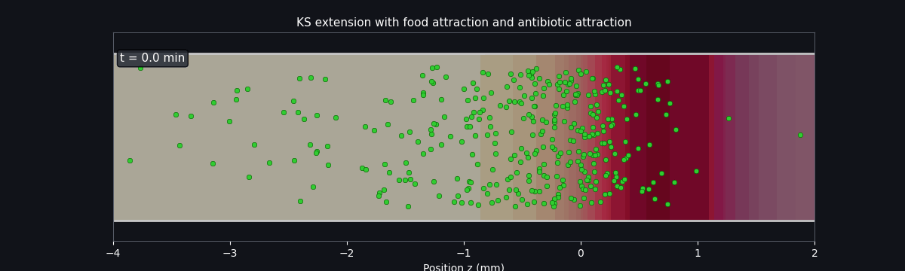

Introduction
Chemotaxis is a fundamental mechanism by which motile bacteria navigate their environment in response to chemical gradients. In Escherichia coli, this process helps bacteria move towards nutrients they need to survive (chemoattractants) and away from harmful conditions (chemorepellants) (The Molecular Switch | Princeton University Press, 2020). At the single-cell level, chemotaxis begins when external chemicals bind to transmembrane chemoreceptors called methyl-accepting chemotaxis proteins (MCPs), which are clustered with the histidine kinase CheA and the coupling protein CheW. In the absence of an attractant or when attractant levels are falling, the receptors keep CheA active. CheA then autophosphorylates and transfers its phosphate to CheY. Phosphorylated CheY (CheY-P) diffuses to the flagellar motor, binds the switch complex, and increases clockwise rotation, which disrupts the flagellar bundle and causes the cell to tumble. When attractant concentration rises, receptor activity suppresses CheA, so less CheY is phosphorylated. When CheY-P levels fall, the flagella rotate mainly counterclockwise, the bundle stays intact, and the cell runs smoothly. Because the bacterium is too small to compare concentrations along its body length, it uses temporal sensing: it effectively compares the present signal with the signal a few moments earlier, so runs are prolonged when conditions improve, and tumbles increase when conditions worsen. Adaptation is achieved by receptor methylation. CheR continuously adds methyl groups to the receptors, which increases receptor output and tends to restore CheA activity, while CheB removes methyl groups; importantly, CheB itself is activated by phosphorylation through CheA, so when CheA activity is high, CheB-P rises and demethylates receptors, and when CheA activity is low, CheB activity falls and methylation accumulates. This negative-feedback loop gradually resets receptor activity back toward its baseline after a change in stimulus, allowing the cell to stop responding to a constant background level and instead remain sensitive to new changes in concentration (Hadjidemetriou et al., 2022).
At the population scale, chemotaxis is commonly described by the Keller–Segel model, which treats bacterial density as a continuous field subject to diffusion and directed movement along chemical gradients (Keller & Segel, 1971). This framework has been successful in capturing travelling bands and aggregation phenomena. However, it assumes constant chemotactic sensitivity and neglects density-dependent interactions.
Phan et al. (2024) have shown how bacterial responses to attractant gradients become nonlinear at high densities due to crowding, receptor saturation, and resource depletion. These findings motivate modifications to the classical Keller-Segel model.
An additional variable is introduced by the presence of antibiotics. Oliveira et al. (2022) showed that bacteria actively move toward antibiotics rather than away from them. This behaviour occurs only when the antibiotic concentration exceeds a threshold (the minimum inhibitory concentration or MIC), and the movement bias increases with the gradient strength. Eventually, cells that migrate into high-antibiotic regions lose viability, leading to what is called “suicidal chemotaxis”.
Our project aims to develop a mathematical model that integrates classical chemotaxis modelling, density-dependent corrections, and an antibiotic-driven extension.
Methods
Experimental data
We used the processed dataset from Phan et al. (2024), which contains mean
bacterial density profiles B(z) and aspartate concentration profiles A(z) for
four density groups: LOW (~0.1–0.3 OD), MID (~3.0–3.3 OD), HIGH (~6.2–6.7 OD),
and EXT (~7.6–8.3 OD). The coordinate z is in the co-moving frame, so z = 0
always marks the peak of the bacterial band.
The Keller-Segel model
The standard KS model describes the time evolution of bacterial density B and
aspartate concentration A:
∂B/∂t = Db ∂²B/∂z² − ∂/∂z [χ · B · ∂Φ/∂z] + α B
∂A/∂t = DA ∂²A/∂z² − γ · B · A / (A + Ath)
Φ = ln(1 + A / Ki)
The first equation says bacteria spread by diffusion, drift up the perceived food
gradient (χ term), and grow at rate α. The second equation says aspartate diffuses
and is consumed by bacteria following Michaelis-Menten kinetics. The perceived
signal Φ is logarithmic, reflecting Weber's law: bacteria are more sensitive to
gradients when background concentration is low.
Density-dependent correction
Following Phan et al. (2024), we replaced the constant chemotactic sensitivity χ
with a density-dependent form:
χ(B) = χ0 / (1 + B / Bth)
This means crowded bacteria respond less strongly to the food gradient. The
parameter Bth ≈ 8.8 OD is the density at which sensitivity is halved.
At low density the model reduces to the original KS equation.
Antibiotic extension
We added a third variable C(z,t) for antibiotic concentration and a second
chemotaxis term pointing toward the antibiotic, motivated by Oliveira et al. (2022):
∂B/∂t = Db ∂²B/∂z² − ∂/∂z [χA(B) · B · ∂ΦA/∂z] − ∂/∂z [χC(B,C) · B · ∂ΦC/∂z] + α B − μ(C) B
∂C/∂t = DC ∂²C/∂z² − κ B C
The killing rate μ(C) activates above the minimum inhibitory concentration (MIC).
Numerical implementation
All PDEs were solved using explicit Euler time-stepping with central finite
differences in space on a 300-point grid (dz ≈ 0.02 mm). The time step satisfied
the stability condition dt < dz² / (2D). No-flux boundary conditions were
applied at both ends of the channel.
Results and Discussion
Figure 1 — Model behaviour
The KS model produces a self-sustaining travelling band
Before testing against real data, we first checked that the model produces the right kind of behaviour. Bacteria diffuse randomly but also drift up the food gradient. As they eat the food behind them and chase fresh food ahead, a moving band forms naturally.
This plot shows the model running from a simple starting condition. The bacterial peak (blue) moves to the right over time, leaving a depleted food zone (orange) behind it.
Figure 2 — Equation terms
Each part of the equation has a clear biological role
This plot shows the three terms in the bacteria equation evaluated separately on the measured data. The diffusion term (spreading) is always small. The chemotaxis term (food-chasing) is the dominant driver of the wave. The growth term adds a small background increase.
Understanding which term matters most tells us where to focus when the model fails at high density — it is the chemotaxis term that needs correcting.
Figure 3 — Experimental data
The real data: band shape changes dramatically with density
Bacteria were placed in a channel filled with aspartate. They swam toward it, ate it, and formed a travelling band. We measured the shape of this band at four different starting densities: LOW, MID, HIGH, and EXT.
At LOW density the band is narrow and sharp. At HIGH and EXT density the band is much wider and flatter. The band still moves at roughly the same speed (~0.28 mm/min), but its shape is very different. This is the key observation we need our model to explain.
Figure 4 — Original model vs data
The standard model works at low density but gets it wrong at high density
We fitted the original KS model to the LOW density data and it matched well. But when we used the same settings for HIGH and EXT density, the model predicted a narrow sharp band — not the wide flat one we actually see. The model assumes bacteria always chase the food gradient just as hard, no matter how crowded they are.

This check compares what the model predicts should be happening to what is actually measured. At HIGH and EXT density the model is far too large — confirming it over-drives the chemotaxis.
Figure 5 — Fixed model
One small change fixes the model for all four densities
We let the food-chasing strength decrease when bacteria are crowded. This single change fixes the model at all four densities at once. The wide flat band at high density is now reproduced, and the narrow sharp band at low density is still correct.

With the fix applied, the model now matches the measured rate of change at all densities.
Figure 6 — Forward simulation
The model correctly predicts how the band moves over time
We took the real measured profiles as a starting point and ran the model forward for five minutes. The bacterial band moved to the right at about 0.28 mm/min — matching the speed seen in the experiment. Behind the band, the food gets eaten up. Ahead of the band, fresh food remains.
Figure 7 — Antibiotic extension
Bacteria attracted toward antibiotics get killed — but dense colonies are harder to disrupt
We added an antibiotic source ahead of the bacterial band. Below a certain concentration the band moves normally. Above that level, bacteria at the front swim into the antibiotic zone and get killed. The band slows down and starts to break apart.
At high density the bacteria are less attracted to the antibiotic — because crowding already reduces how strongly they respond to any gradient. A dense colony is actually harder to disrupt this way.

The bacterial band moves right until it hits the antibiotic zone, where bacteria are killed and the band breaks down.
The standard model works at low density but predicts a band that is too narrow and
sharp at high density. The rate-of-change diagnostic confirmed the problem: the
model's right-hand side was much larger than the measured ∂B/∂t at high density,
showing the model was over-driving the chemotaxis term.
Replacing constant χ with χ(B) = χ0 / (1 + B/Bth) fixed
the model at all four density groups simultaneously. The wide flat band at high
density was reproduced, and the narrow sharp band at low density was preserved.
One additional parameter unifies behaviour across a 50-fold range of density.
Forward simulation from the real experimental initial conditions reproduced the
correct wave speed (~0.28 mm/min) and band shape over five minutes. The aspartate
profile evolved as expected, with depletion behind the band and fresh nutrient
ahead — the self-sustaining mechanism that drives the travelling wave.
The antibiotic extension showed that bacteria attracted toward an antibiotic above
the MIC enter the killing zone and are eliminated, disrupting the travelling wave.
Importantly, dense colonies were harder to disrupt: because crowding already
reduces χ(B), high-density bacteria are less strongly attracted to the antibiotic
gradient and fewer enter the killing zone. The density-dependent suppression of
chemotaxis may therefore inadvertently protect high-density colonies from suicidal
antibiotic attraction.
These results have implications for gut health. The gut microbiome operates at
very high bacterial densities, where our model predicts that chemotactic responses
are substantially reduced. This could mean that antibiotic-driven disruption of
chemotaxis is density-dependent — potentially explaining why high-density biofilms
are harder to treat.
Summary of findings
1 — Model behaviour
The KS model naturally produces a self-sustaining travelling band. The chemotaxis term is the dominant driver.
2 — Data
The bacterial band gets wider and flatter as density increases, but moves at the same speed in all cases.
3 — Original model
The standard model works at low density but predicts a band that is too narrow and sharp at high density.
4 — Fixed model
Making bacteria respond less strongly to food when crowded fixes the model for all four densities at once.
5 — Simulation
Running the fixed model forward in time reproduces the correct band shape and movement speed.
6 — Antibiotics
When bacteria swim toward antibiotics they get killed and the band breaks down. Dense colonies are harder to disrupt because crowding already reduces their response to any gradient.
References
- Phan, T. V. et al. (2024). Bacterial density-dependent chemotaxis in a microfluidic channel. Physical Review Letters.
- Oliveira, N. M. et al. (2022). Suicidal chemotaxis in bacteria. Nature Communications, 13, 7608.
- Granato, E. T. & Foster, K. R. (2020). The evolution of mass cell suicide in bacterial warfare. Current Biology, 30(15), 2836–2843.
- Keller, E. F. & Segel, L. A. (1971). Model for chemotaxis. Journal of Theoretical Biology, 30(2), 225–234.